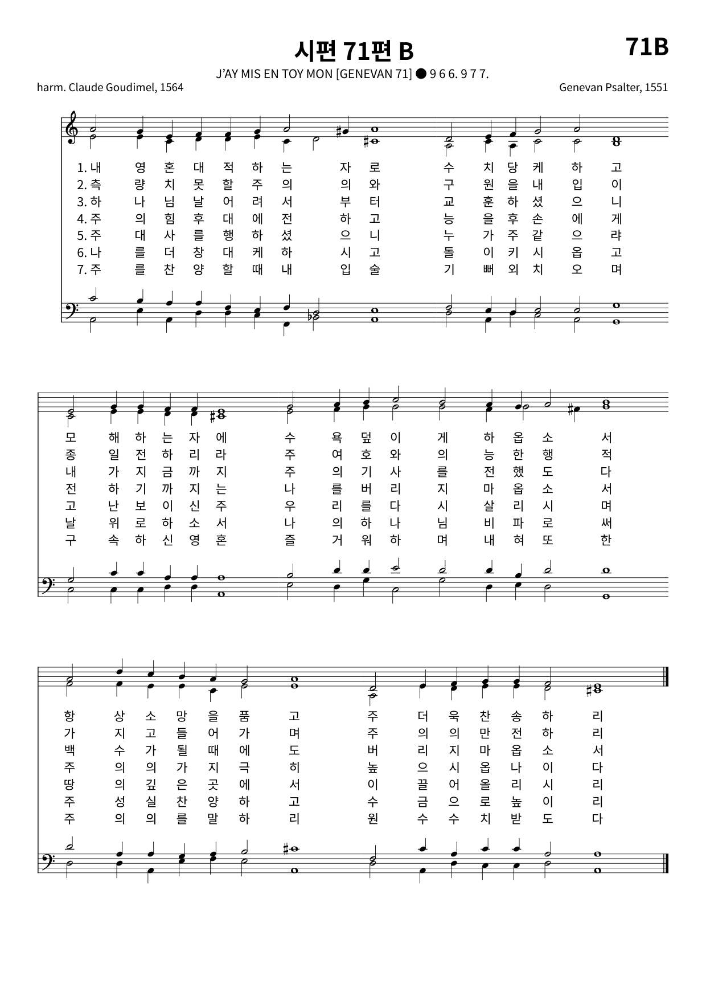

Psalm 71B
J’AY MIS EN TOY MON [GENEVAN 71] · 9 6 6. 9 7 7.
English title: In Thee, O LORD, I’ve Taken Refuge
Tune: Genevan Psalter, 1551 · Harmony: Claude Goudimel, 1564 · Lyrics: Korean adaptation of Psalm 71 from the Korean Revised Version (AI draft adaptation · not yet theologically reviewed) · 7 stanzas
Psalm 71 is divided into 2 tunes: A B · This tune contains stanzas 8–14 of the Psalm 71 lyrics.
Score PDF MusicXML (for printing) MusicXML (for accompaniment, with prelude and repeats) Read Psalm 71 (Korean Revised Version)
Score
← Psalm 71A ListAccompaniment (in preparation)Psalm 72 →
Lyrics (Korean)
Stanza 1
내 영혼 대적하는 자로
수치 당케 하고
모해하는 자에
수욕 덮이게 하옵소서
항상 소망을 품고
주 더욱 찬송하리
내 영혼 대적하는 자로
수치 당케 하고
모해하는 자에
수욕 덮이게 하옵소서
항상 소망을 품고
주 더욱 찬송하리
Stanza 2
측량치 못할 주의 의와
구원을 내 입이
종일 전하리라
주 여호와의 능한 행적
가지고 들어가며
주의 의만 전하리
측량치 못할 주의 의와
구원을 내 입이
종일 전하리라
주 여호와의 능한 행적
가지고 들어가며
주의 의만 전하리
Stanza 3
하나님 날 어려서부터
교훈하셨으니
내가 지금까지
주의 기사를 전했도다
백수가 될 때에도
버리지 마옵소서
하나님 날 어려서부터
교훈하셨으니
내가 지금까지
주의 기사를 전했도다
백수가 될 때에도
버리지 마옵소서
Stanza 4
주의 힘 후대에 전하고
능을 후손에게
전하기까지는
나를 버리지 마옵소서
주의 의가 지극히
높으시옵나이다
주의 힘 후대에 전하고
능을 후손에게
전하기까지는
나를 버리지 마옵소서
주의 의가 지극히
높으시옵나이다
Stanza 5
주 대사를 행하셨으니
누가 주 같으랴
고난 보이신 주
우리를 다시 살리시며
땅의 깊은 곳에서
이끌어 올리시리
주 대사를 행하셨으니
누가 주 같으랴
고난 보이신 주
우리를 다시 살리시며
땅의 깊은 곳에서
이끌어 올리시리
Stanza 6
나를 더 창대케 하시고
돌이키시옵고
날 위로하소서
나의 하나님 비파로써
주 성실 찬양하고
수금으로 높이리
나를 더 창대케 하시고
돌이키시옵고
날 위로하소서
나의 하나님 비파로써
주 성실 찬양하고
수금으로 높이리
Stanza 7
주를 찬양할 때 내 입술
기뻐 외치오며
구속하신 영혼
즐거워하며 내 혀 또한
주의 의를 말하리
원수 수치 받도다
주를 찬양할 때 내 입술
기뻐 외치오며
구속하신 영혼
즐거워하며 내 혀 또한
주의 의를 말하리
원수 수치 받도다